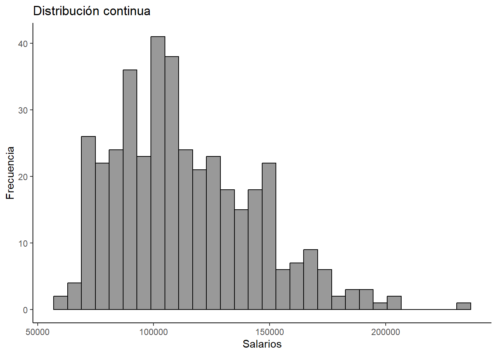
Práctica 5. Distribución y Visualización de datos con R
Sesión del jueves, 19 de junio de 2025
Presentación
Objetivo de la práctica
El objetivo de esta guía práctica es aplicar los conocimientos aprendidos en clases sobre la forma de una distribución en R, comprendiendo sus usos, relevancia y formas de analizarla. También veremos visualización de datos con R, considerando las mejores prácticas para comunicar datos y análisis en ciencias sociales.
1. La noción de una distribución y sus tipos (continuas y discretas)
2. Estimar e interpretar la asimetría y curtosis de una distribución
3. Contrastar distribuciones empíricas con teóricas
4. La noción de distribución muestral
5. Qué es la visualización de datos y cómo comunicarlos a una audiencia de manera eficiente, completa e insesgada.
6. Visualizar datos univariados con {ggplot2}.
1. Noción de una distribución
En estadística, una distribución se refiere al conjunto de todos los valores posibles de una variable y las frecuencias (o probabilidades) con las que se producen. Generalmente, tendemos a concebir una distribución a partir del ordenamiento de dichas categorías de respuesta y su frecuencia de ocurrencia.
Es una función que muestra la frecuencia con la que se da cada valor o rango de valores en un conjunto de datos. Esto implica que, por función, nos referimos a que la magnitud de una variable depende de otra. Con ello, nacen dos conceptos:
el dominio, que se refiere a todos los posibles valores para los que la función está definida
el recorrido, que se refiere a los valores que efectivamente toma una variable en una función
F(x)
¿Y para que me sirve conocer la distribución de una variable?
Al comprender la distribución de una variable, podemos entender mejor las tendencias centrales (como la media o la mediana), la variabilidad (como el rango o la desviación estándar) y la probabilidad de diferentes resultados o sucesos.
Además, cuando una distribución empírica se asemeja a una teórica, podemos aplicarle las propiedades de esta última y realizar inferencias y pruebas de hipótesis.
1.1 Distribuciones continuas y discretas
Existen dos tipos de distribuciones según el nivel de medición de las variables: las continuas y las discretas.
Como cabe esperar, las distribuciones continuas aplican a variables numericas (intervalares y de razón). Es una distribución que describe la probabilidad o frecuencia de que una variable continua tome un valor particular dado un intervalo o un rango. Toma valores a lo largo de un continuo de dominio (\(R\)), es decir, su dominio son todos los números reales.
Por su parte, las distribuciones discretas son comunmente utilizadas con variables categóricas (nominales y ordinales). Son distribuciones en las que una variable sólo puede tomar un número contable de valores distintos. En otras palabras, es una distribución en la que la variable sólo puede tomar valores específicos, en lugar de cualquier valor dentro de un intervalo. Su dominio es un conjunto de valores enteros (\(N, Z, Q\)).
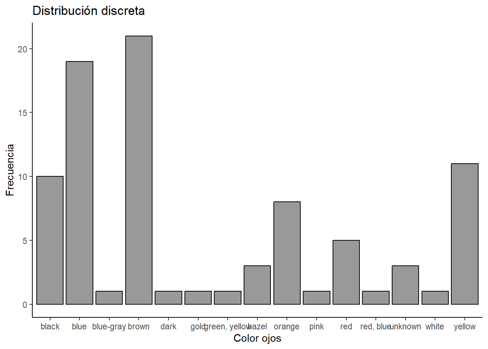
Recursos de la práctica
En esta práctica trabajaremos con la base de datos de la Encuesta de Opinión Pública (CEP) de Diciembre del 2019 realizada por el Centro de Estudios Públicos. Esta base la pueden encontrar en el canal de U-Cursos sección Material Docente, o bien, en el siguiente enlace CEP 2019 podrán descargar el archivo que contiene la base CEP Diciembre 2019.
Preparación de datos
1. Cargar librerías
Para esta sesión, usaremos librerías que ya conocemos en prácticos pasados:
pacman::p_load(tidyverse, # colección de paquetes para manipulación de datos
haven, # para importar datos
car,# para recodificar datos
psych, # para analizar datos
sjmisc) # para analizar datos
options(scipen = 999) # para desactivar notacion cientifica
rm(list = ls()) # para limpiar el entorno de trabajo2. Importar datos
Cargamos la base de datos CEP Diciembre 2019 mediante el paquete haven
cep <- haven::read_sav("input/data/CEP_dic2019.sav")3. Limpiar datos
3.1 Seleccionamos las variables de interés y las renombramos:
proc_cep <- cep %>%
select(edad = DS_P2_EXACTA,
sexo = DS_P1,
empleo = DS_P5,
satisfaccion = SV_1)3.2 Recodificamos las variables satisfaccion, sexo y empleo. Ademas, transformamos la variable edad a tramos:
proc_cep$sexo <- as.factor(proc_cep$sexo) # primero pasamos a factor la variable al venir con etiquetas
proc_cep$empleo <- as.factor(proc_cep$empleo)
proc_cep <- proc_cep %>%
mutate(satisfaccion=car::recode(satisfaccion, recodes = c("88 = NA; 99 = NA")),
sexo = car::recode(sexo, recodes = c("1 = 'Hombre'; 2 = 'Mujer'")),
empleo = car::recode(empleo, recodes = c("1 = 'Ocupado'; 2 = 'Desocupado'; 3 = 'Nunca ha trabajado'; 99 = NA")),
tramo_edad = case_when(edad <= 29 ~ "Jovenes",
edad >= 30 & edad <= 59 ~ "Adultos",
edad >= 60 ~ "Adutos mayores"))
Nota
Recordar: cuando recodifcamos buscamos reducir o agrupar categorías. Aquello es posible considerando los niveles de medición de las variables (NOIR) y sus propiedades (que son acumulativas). De modo que recodificamos variables que sean cuantitativas a cualitativas, no al revés.
- N: variables nominales. Propiedad (1): clasifican
- O: variables ordinales. Propiedad (2): clasifican y ordenan
- I: variables intervalares. Propiedad (3): clasifican, ordenan y expresan magnitudes
- R: variables de razón. Propiedad (4): clasifican, ordenan, expresan magnitudes y permiten operar sus categorías (aditividad)
3.4 Removemos los valores perdidos o missing (NA).
proc_cep <- na.omit(proc_cep)4. Por último, guardamos la base procesada.
saveRDS(proc_cep, file = "Output/proc_cep.RData")2. Estadísticos de forma: Asimetría y curtosis
La asimetría es la medida en que la distribución de una variable se aleja de una distribución simétrica a ambos lados de su punto central. ¿Qué tan simétrica es la distribución de mis datos en ambos lados de sus colas respecto al centro?
Por su parte, la curtosis es la medida del grado de agrupamiento de los datos de una distribución. ¿Qué tan agrupados están mis datos en la distribución?
Ambas son útiles para conocer de mejor manera la distribución de nuestros datos, además de que nos permiten conocer bajo qué supuestos podemos realizar analisis más complejos (próximos cursos de la carrera).
Para ver un ejemplo aplicado, ocuparemos los datos del práctico anterior.
2.1 Preparación de datos
Cargamos las librerías y datos que ocuparemos
pacman::p_load(tidyverse,
psych,
sjmisc)
options(scipen = 999)
rm(list = ls())
proc_cep <- readRDS("Output/proc_cep.RData")2.2 Análisis de la forma de distribución
Analicemos e interpretemos la forma de la distribución de nuestras variables. En este ejemplo tenemos:
- una de razón,
- una ordinal de 10 categorías.
psych::describe(proc_cep$edad) vars n mean sd median trimmed mad min max range skew kurtosis se
X1 1 1474 48.43 17.84 48.5 48.01 21.5 18 99 81 0.14 -0.93 0.46ggplot(data = proc_cep,
mapping = aes(x = edad)) +
geom_density(color = "black", fill = "#FA8072", alpha = 0.8) +
labs(title ="Diagrama densidad: Edad",
x = "Edad",
y = "Frecuencia",
caption = "Fuente: Elaboración propia en base a Encuesta CEP Diciembre 2019.") 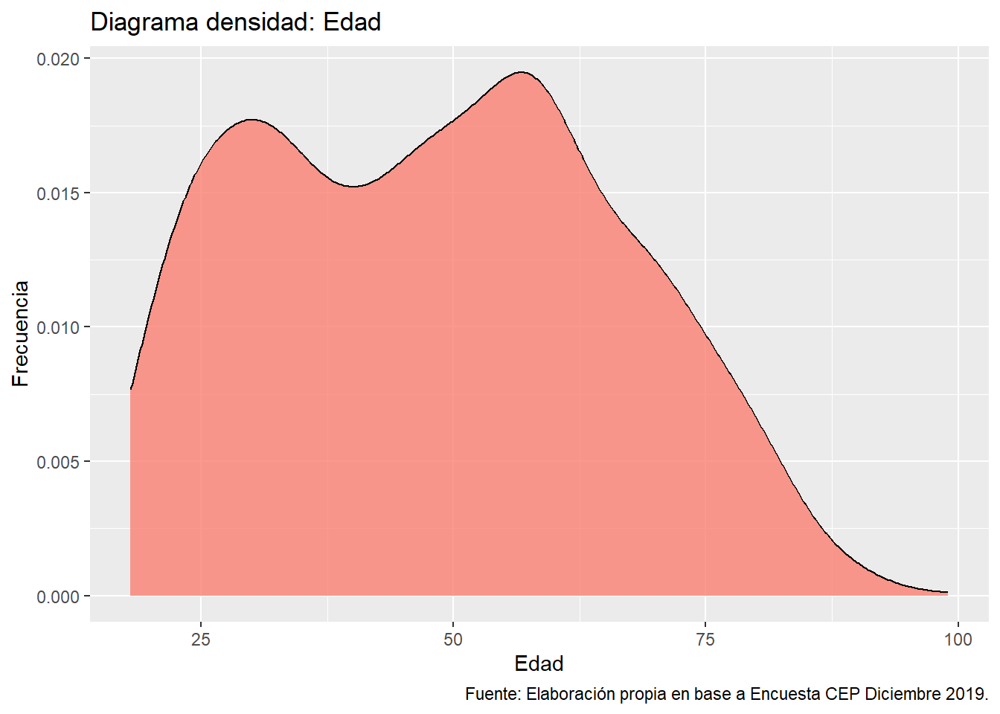
A partir de los estadísticos entregados, sabemos que la variable edad tiene una asimetría positiva (skew = 0.14) pero baja (< 0.5), lo cual indica que los datos se tienden a distribuir hacía los menores valores del eje X. Por su parte, la curtosis es negativa (kurtosis = -0.93) o platicúrtica, lo cual indica que existe una baja concentración en el centro de los datos.
psych::describe(proc_cep$satisfaccion) vars n mean sd median trimmed mad min max range skew kurtosis se
X1 1 1474 6.87 2.18 7 6.97 2.97 1 10 9 -0.32 -0.45 0.06ggplot(data = proc_cep,
mapping = aes(x = satisfaccion)) +
geom_density(color = "black", fill = "darkred", alpha = 0.8) +
labs(title ="Histograma densidad: Satisfaccion",
x = "Satisfaccion",
y = "Frecuencia",
caption = "Fuente: Elaboración propia en base a Encuesta CEP Diciembre 2019.") 
En cuanto a la variable satisfaccion, tenemos una asimetría negativa (skew = -0.32) aunque baja, indicando que los datos se tienden a distribuir hacia la parte superior de la variable. Además, la curtosis también es negativa o platicúrtica (kurtosis = -0.45), por lo que existe una baja concentración en el centro de los datos.
3. Distribuciones empíricas y teóricas
Como vimos en clases, una distribución empírica (u observada) es la distribución de los valores que asume la variable en un grupo concreto a partir de una observación.
Mientras que, por su parte, una distribución teórica es función matématica que expresan la distribución de un conjunto de números mediante su probabilidad de ocurencia. En palabras sencillas, es una función de densidad que permite asignar probabilidades de ocurrencia a los resultados.
Tip
Variable aleatoria
En las distribuciones teóricas, a veces nos vamos a encontrar con el concepto de variable aleatoria. ¿Qué es? En probabilidad y estadística, una variable aleatoria es una variable cuyos valores posibles son resultados numéricos de un fenómeno aleatorio.
Cuando una distribución empírica se asejema a una teórica, podemos aplicarle a la primera las propiedades de la última. Así, nos permiten hacer inferencia estadística y conocer una serie de características de la población.
Una de las distribuciones teóricas más utilizada es la normal o Gaussiana, la cual es una herramienta potente y ampliamente utilizada en estadística y probabilidad, debido a sus numerosas propiedades útiles y a sus aplicaciones prácticas en un gran número de campos y contextos.
Contrastemos ahora la distribución empírica de nuestras variables con la distribución normal
ggplot(proc_cep, aes(edad)) +
geom_histogram(aes(x = edad, y = ..density..), bins = 50, color = "black", fill = "grey") +
geom_density(color = "blue")Warning: The dot-dot notation (`..density..`) was deprecated in ggplot2 3.4.0.
ℹ Please use `after_stat(density)` instead.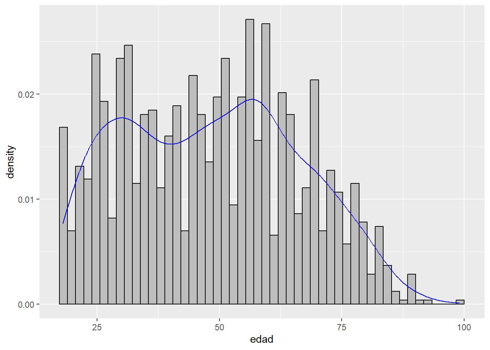
ggplot(proc_cep, aes(edad)) +
geom_histogram(aes(x = edad, y = ..density..), bins = 50, color = "black", fill = "grey") +
geom_density(color = "blue")+
stat_function(fun = dnorm, args = list(mean = mean(proc_cep$edad), sd = sd(proc_cep$edad)))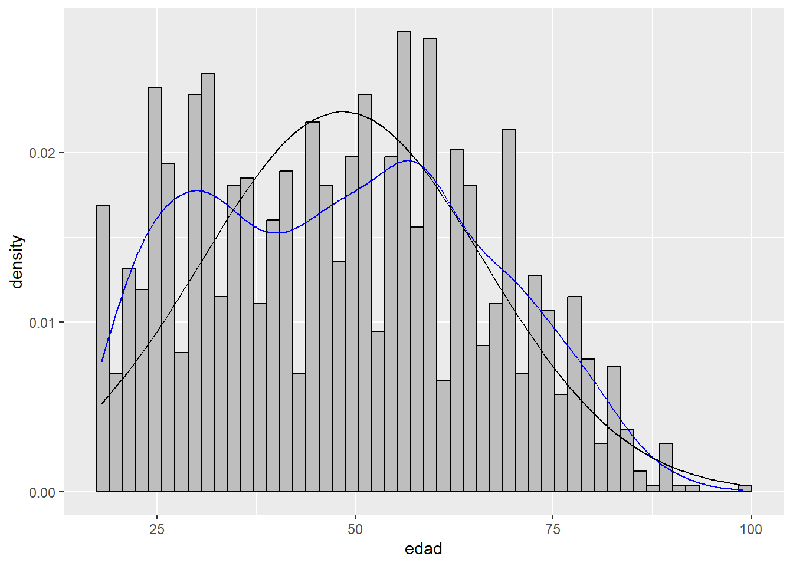
En la primera figura vemos la distribución empírica de la variable edad (histograma y densidad). En la segunda, agregamos la curva normal (o distribución), y obtenemos una evaluación gráfica de qué tan bien nuestros datos se ajustan a esta distribución teórica.
Hagamos lo mismo con la variable satisfaccion
ggplot(proc_cep, aes(satisfaccion)) +
geom_histogram(aes(x = satisfaccion, y = ..density..), color = "black", fill = "grey") +
scale_x_continuous(limits = c(0,15)) +
geom_density(color = "blue")+
stat_function(fun = dnorm, args = list(mean = mean(proc_cep$satisfaccion), sd = sd(proc_cep$satisfaccion)))`stat_bin()` using `bins = 30`. Pick better value with `binwidth`.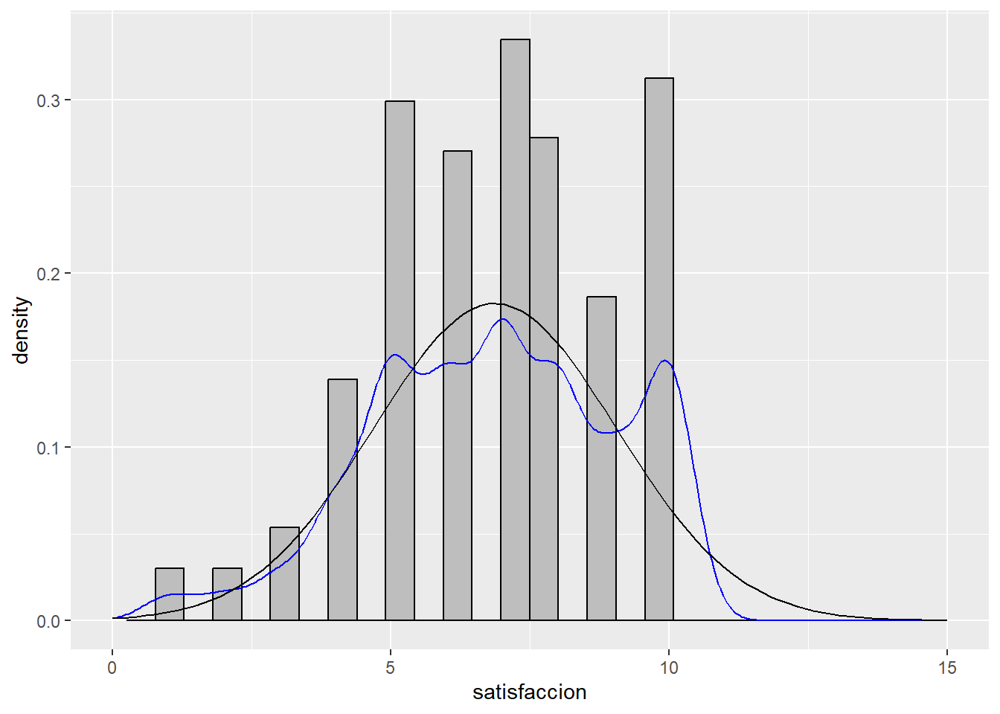
Una mejor manera de ver si nuestros datos o distribución empírica se ajustan a una distribución normal, es mediante los Q-Q plots.
ggplot(proc_cep, aes(sample = edad)) +
stat_qq() +
stat_qq_line(color = "blue")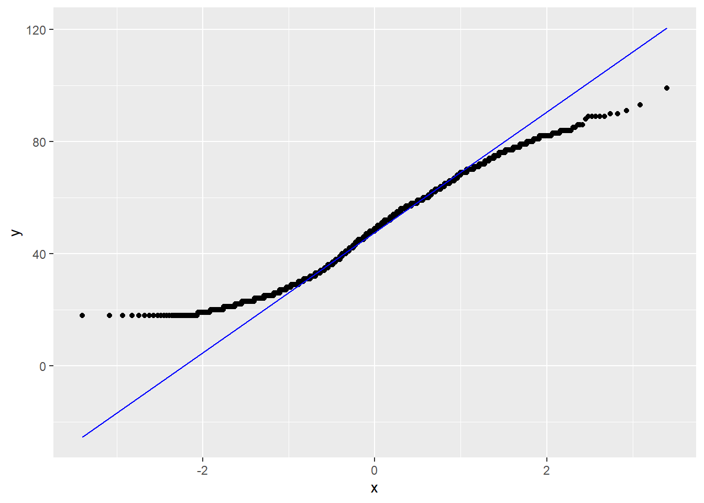
ggplot(proc_cep, aes(sample = satisfaccion)) +
stat_qq() +
stat_qq_line(color = "blue")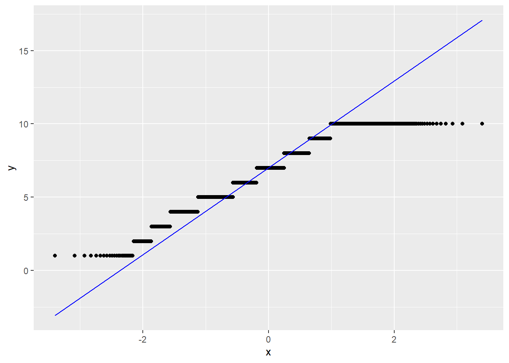
La idea es que ajuste la curva teorica (la recta) con la mayor cantidad de puntos (la variable observada). Nos permite ver donde ajusta y donde no ajusta.
4. Distribución muestral
Una última distribución corresponde a la distribución muestral o de muestreo. Esta se define como la distribución de una estimación (ej. promedio de IQ) en base a todas las posibles muestras que podemos obtener de la población. En otras palabras, es la distribución teórica (generadas a partir de una función matemática) que tendrá un estadístico en infinitas muestras seleccionadas al azar de una población.
Por ejemplo, si en cada una de esas muestras calculamos \(\overline{X}\), podremos comprobar que no siempre toma el mismo valor, sino que varía de una muestra a otra. Estos posibles valores del estadístico \(\overline{X}\) constituyen su distribución muestral

Veamos un ejemplo simulado con los puntajes PSU. Primero, creemos una base de datos ficticia para una distribución muestral indicando la cantidad de muestras (en este caso 300.000), y el promedio y desviación estándar que tendrá.
psu1 <- rnorm(n = 300000, mean = 500, sd = 110)
psych::describe(psu1) vars n mean sd median trimmed mad min max range skew
X1 1 300000 499.94 109.99 499.72 499.87 109.96 -31.74 968.68 1000.42 0.01
kurtosis se
X1 0 0.2Ahora, grafiquemos esta distribución y veamos qué tanto ajusta con la distribución normal.
ggplot(data.frame(psu1), aes(x = psu1)) +
geom_histogram(color = "black", fill = "#FA8072") +
ggtitle("Puntaje PSU - 300.000 observaciones")`stat_bin()` using `bins = 30`. Pick better value with `binwidth`.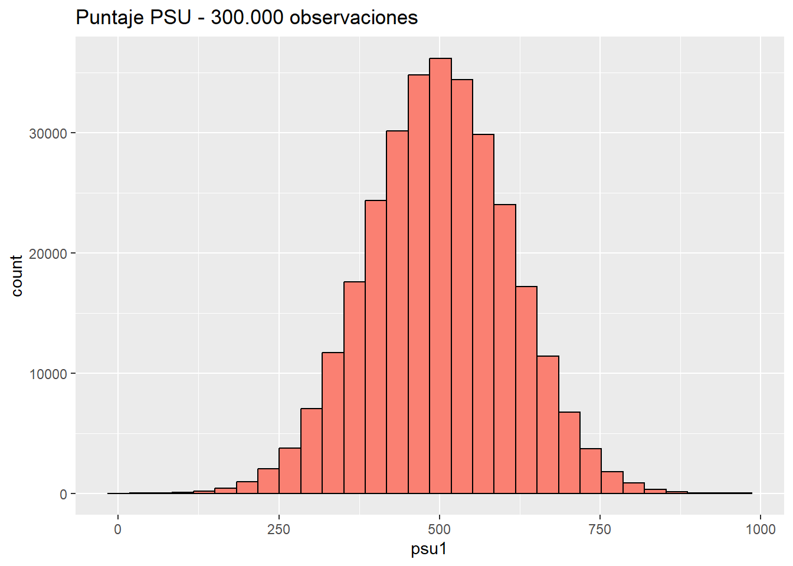
ggplot(data.frame(psu1), aes(psu1)) +
geom_histogram(aes(x = psu1, y = ..density..), bins = 50, color = "black", fill = "grey") +
stat_function(fun = dnorm, args = list(mean = mean(psu1), sd = sd(psu1)), color = "red")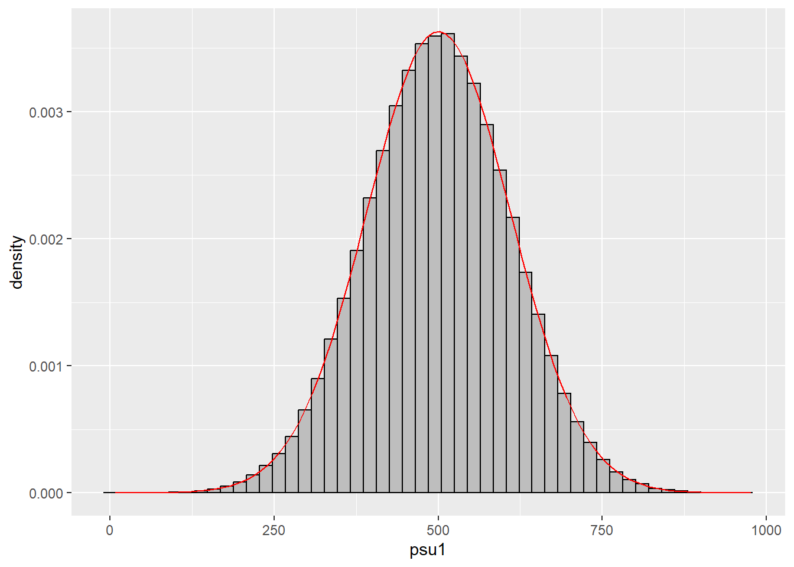
Como vemos, dado que obtuvimos esta distribución de puntajes PSU mediante un muestreo aleatorio y repetido, es decir, que sacamos el puntaje PSU promedio de N muestras, tenemos una distribución empiríca que se ajusta a una distribución normal.
5. ¿Qué es visualizar datos?
La visualización de datos consiste en dar sentido a filas y columnas de datos, presentándolos en un formato fácilmente comprensible a una audiencia.

Visualizar datos es una de las tareas más recurrentes en estadística, al mismo tiempo que es una de las formas más delicadas de comunicar información. ¿A qué nos referimos? básicamente a que, como investigadores/as, comunicamos nuestros resultados buscando resaltar un aspecto de la realidad e intentando crear un mensaje con los datos. Por ello, es sumamente importante hacerlo de forma fidedigna, sencilla y pensando siempre en cómo la audiencia podría interpretarlo.

5.1 Cómo NO visualizar datos
Es bastante común ver malas formas de comunicar datos; en los medios de comunicación, redes sociales e inclusive en la misma investigación acádemica. Esto ocurre por diversos motivos, ya sea por elementos gráficos, de escalas o de orden que engañan al ojo y percepción humana. Algunos ejemplos de cómo no se deben comunicar datos son:


5.2 Algunos principios para visualizar datos
¿Y entonces cómo realizar una buena/correcta visualización de datos? Tengamos como premisa la siguiente cita:
“La excelencia gráfica es la presentación bien diseñada de datos interesantes: una cuestión de sustancia, de estadística y de diseño… [Consiste] en ideas complejas comunicadas con claridad, precisión y eficacia. … [Es] lo que da al espectador el mayor número de ideas en el menor tiempo con la menor tinta en el menor espacio … [Es] casi siempre multivariante … Y la excelencia gráfica requiere decir la verdad sobre los datos”.
Edward Tufte, The Visual Display of Quantitative Information, p. 51
10 Principios para la visualización de datos
Conoce a tu audiencia ¿Qué preguntas necesitan respuesta?
Utiliza el tipo de gráfico adecuado para representar el tipo de información que dispone.
La forma sigue a la función. Concéntrate en cómo va a utilizar los datos tu público y deja que eso determine el estilo de presentación.
Proporcione el contexto necesario para que los datos se interpreten y se actúe en consecuencia.
Mantenga la sencillez. Elimine la información no esencial.
Resalte la información más importante
Utilice los colores con prudencia
Utilice cuidadosamente las proporciones para que las diferencias de tamaño en el diseño representen fielmente las diferencias de valor.
Sé escéptico. Pregúntese qué datos no están representados y qué información podría, por tanto, malinterpretarse o perderse.
Muestra la verdad de tus datos, no lo que quisieras creer.
6. Visualización de datos con ggplot2
Una vez que conocemos cómo es la distribución de nuestras variables, procedemos a graficarlas considerando los principios para una buena visualizacion de datos.
Pero antes, debemos conocer qué es ggplot2 y cúal es su lógica.

Ggplot2 es un potente paquete para visualizar datos en R. Funciona por capas, comenzando desde lo más central o nuclear hasta llegar a los detalles más estéticos necesarios.
- La primera capa corresponde a los datos, es decir, las variables que queremos graficar ya listas y procesadas.
- La segunda corresponde al “mapping”, que es básicamente determinar cuáles variables serán el eje X e Y, si existen grupos u otros.
- La tercera es la geometría, la cual se refiere a la forma que tendrá el gráfico (líneas, barras, puntos, boxplot, violinplot, etc.).
¡COMENCEMOS!
6.1 Diagrama de barras
La forma más común de presentar variables nominales es mediante un gráfico de barras.
En este primer ejemplo iremos capa por capa (o paso por paso), para entender la logica de ggplot2, en los siguientes lo haremos en conjunto.
ggplot(data = proc_cep,
mapping = aes(x = empleo)) # especificamos datos y mapping 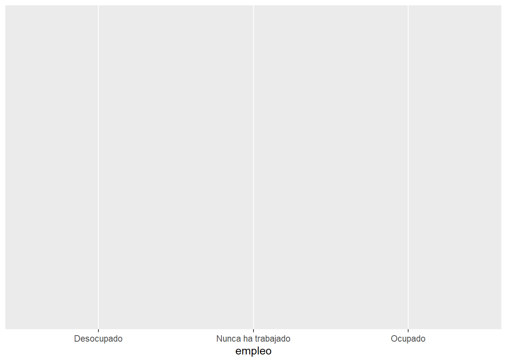
ggplot(data = proc_cep,
mapping = aes(x = empleo)) + # especificamos datos y mapping
geom_bar() # agregamos geometria o forma 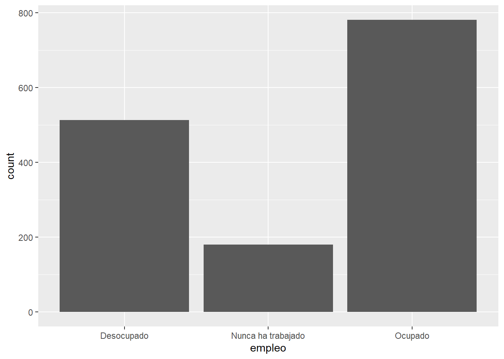
ggplot(data = proc_cep,
mapping = aes(x = empleo)) + # especificamos datos y mapping
geom_bar(color = "black", fill = "darkblue") # agregamos geometria y color y relleno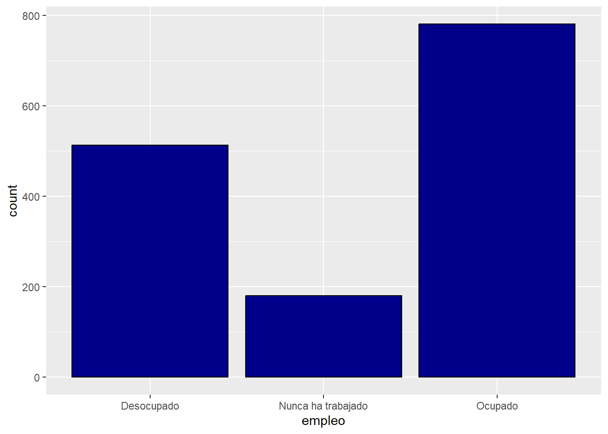
ggplot(data = proc_cep,
mapping = aes(x = empleo)) + # especificamos datos y mapping
geom_bar(color = "black", fill = "darkblue") + # agregamos geometria y color y relleno
scale_y_continuous(limits = c(0,1000)) # agregamos escala en eje Y y ponemos limites minimos y maximos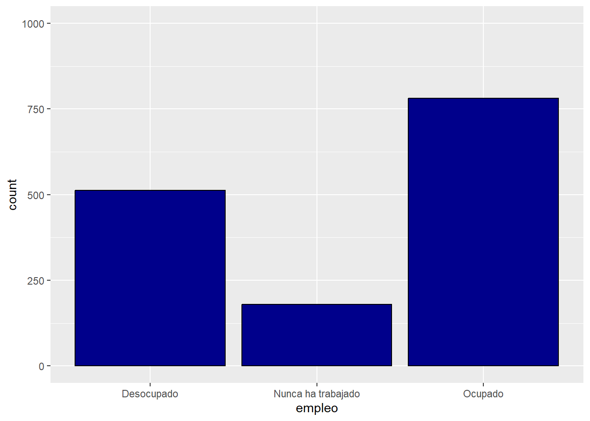
ggplot(data = proc_cep,
mapping = aes(x = empleo)) + # especificamos datos y mapping
geom_bar(color = "black", fill = "darkblue") + # agregamos geometria y color y relleno
scale_y_continuous(limits = c(0,1000)) +# agregamos escala en eje Y y ponemos limites minimos y maximos
labs(title ="Condición de empleo 2019",
x = "Situación empleo",
y = "Frecuencia",
caption = "Fuente: Elaboración propia en base a Encuesta CEP Diciembre 2019.") # agregamos titulo, nombres a los ejes y fuenteggplot(data = proc_cep,
mapping = aes(x = empleo)) + # especificamos datos y mapping
geom_bar(color = "black", fill = "darkblue") + # agregamos geometria y color y relleno
scale_y_continuous(limits = c(0,1000)) +# agregamos escala en eje Y y ponemos limites minimos y maximos
labs(title ="Condición de empleo 2019",
x = "Situación empleo",
y = "Frecuencia",
caption = "Fuente: Elaboración propia en base a Encuesta CEP Diciembre 2019.") +# agregamos titulo, nombres a los ejes y fuente
geom_text(aes(label = ..count..), stat = "count", vjust = 1.5, colour = "white") # agregamos las freq de cada barra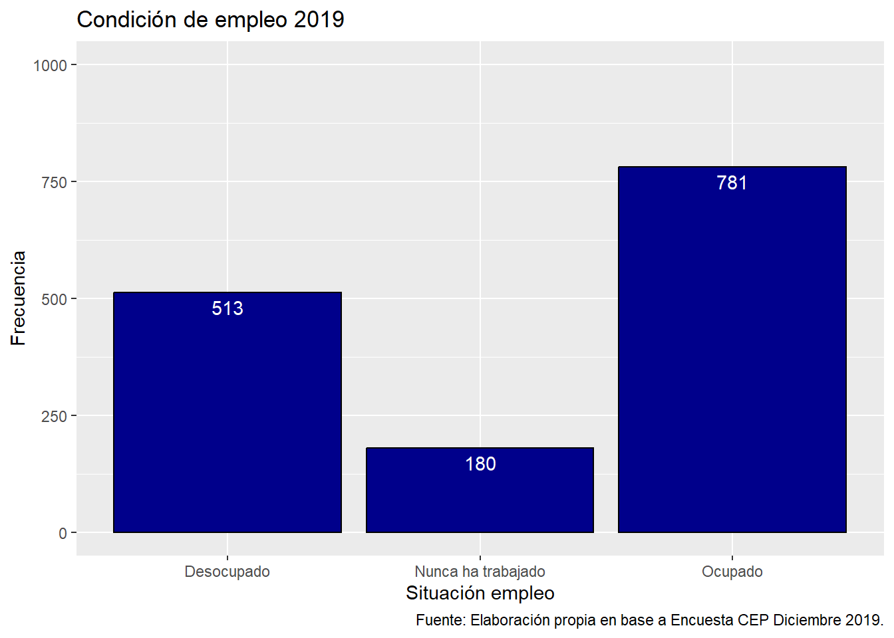
¿Y podemos diferenciar por sexo en este mismo gráfico? Claro que sí, debemos indicar la variable que agrupa en el mapping o coordenadas mediante el argumento fill.
ggplot(data = proc_cep,
mapping = aes(x = empleo, fill = sexo)) + # especificamos datos y mapping
geom_bar() + # agregamos geometria
scale_y_continuous(limits = c(0,1000)) +# agregamos escala en eje Y y ponemos limites minimos y maximos
labs(title ="Condición de empleo, segun sexo 2019",
x = "Situación empleo",
y = "Frecuencia",
caption = "Fuente: Elaboración propia en base a Encuesta CEP Diciembre 2019.") +# agregamos titulo, nombres a los ejes y fuente
geom_text(aes(label = ..count..), stat = "count", colour = "white", position = position_stack(.1)) # agregams freq de cada barra por grupo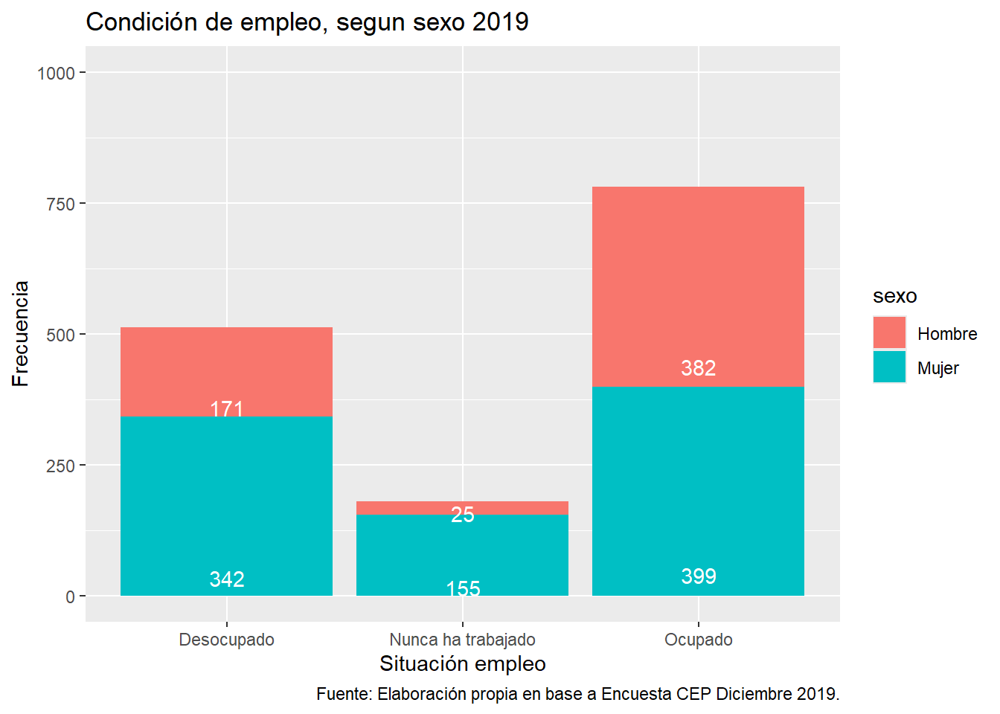
Ahora tenemos un gráfico de barras apiladas según el sexo de los entrevistados, y dicha agrupación nos aparece como una leyenda en la parte izquierda del grafico con el nombre de los grupos.
¿Y si en vez de que sea apilado, quiero que las barras por sexo estén una al lado de la otra? Fácil, debemos especifícarlo dentro de la geometría.
ggplot(data = proc_cep,
mapping = aes(x = empleo, fill = sexo)) + # especificamos datos y mapping
geom_bar(position = "dodge2") + # agregamos geometria y especificamos posicion
labs(title ="Condición de empleo, segun sexo 2019",
x = "Situación empleo",
y = "Frecuencia",
caption = "Fuente: Elaboración propia en base a Encuesta CEP Diciembre 2019.") +# agregamos titulo, nombres a los ejes y fuente
geom_text(aes(label = ..count..), stat = "count", colour = "white",
vjust = 1.5, position = position_dodge(.9)) # agregamos freq de cada barra por grupo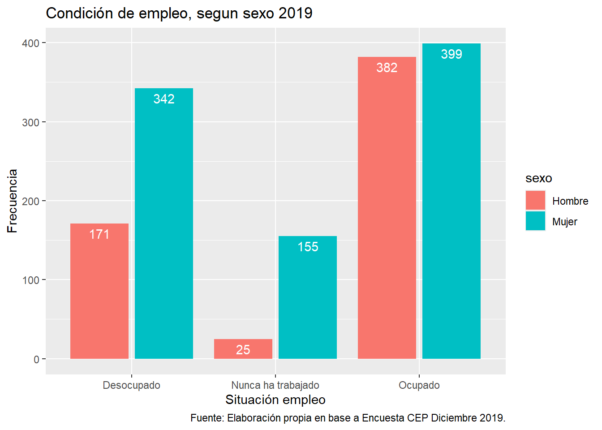
ggplot(data = proc_cep,
mapping = aes(x = empleo, fill = tramo_edad)) + # especificamos datos y mapping
geom_bar(position = "dodge2") + # agregamos geometria y especificamos posicion
labs(title ="Condición de empleo, segun tramo etario 2019",
x = "Situación empleo",
y = "Frecuencia",
caption = "Fuente: Elaboración propia en base a Encuesta CEP Diciembre 2019.") +# agregamos titulo, nombres a los ejes y fuente
geom_text(aes(label = ..count..), stat = "count", colour = "white",
vjust = 1.5, position = position_dodge(.9)) # agregamos freq de cada barra por grupo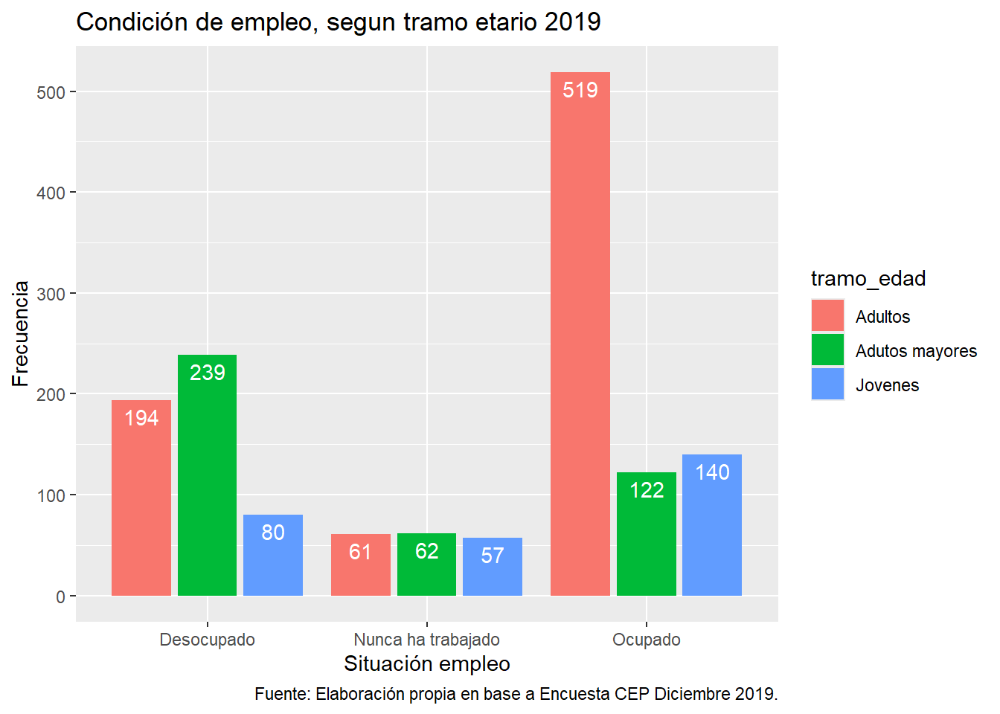
6.2 Histogramas
Cuando tenemos variables con muchas categorías de respuesta, como las variables continuas u ordinales de más de 7 categorías, podemos usar histogramas para representar su distribución.
ggplot(data = proc_cep,
mapping = aes(x = edad)) + # especificamos datos y mapping
geom_histogram()# agregamos geometria `stat_bin()` using `bins = 30`. Pick better value with `binwidth`.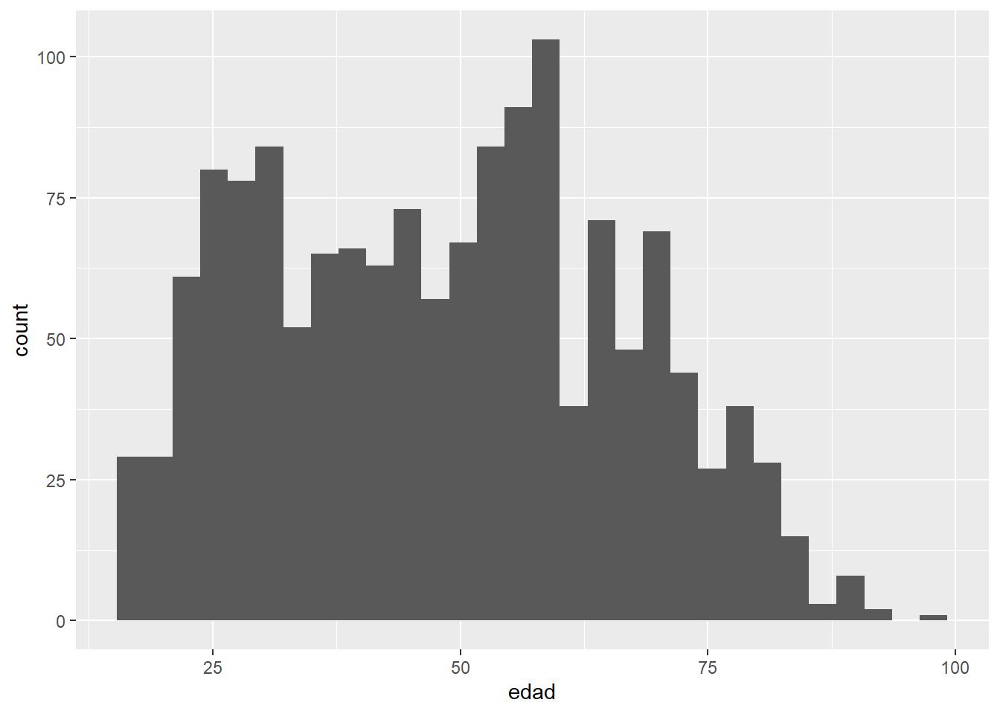
ggplot(data = proc_cep,
mapping = aes(x = edad)) + # especificamos datos y mapping
geom_histogram(color = "black", fill = "#FA8072") + # agregamos geometria y colores
labs(title ="Histograma frecuencias abs: Edad",
x = "Edad",
y = "Frecuencia",
caption = "Fuente: Elaboración propia en base a Encuesta CEP Diciembre 2019.") # agregamos titulo, nombres a los ejes y fuente`stat_bin()` using `bins = 30`. Pick better value with `binwidth`.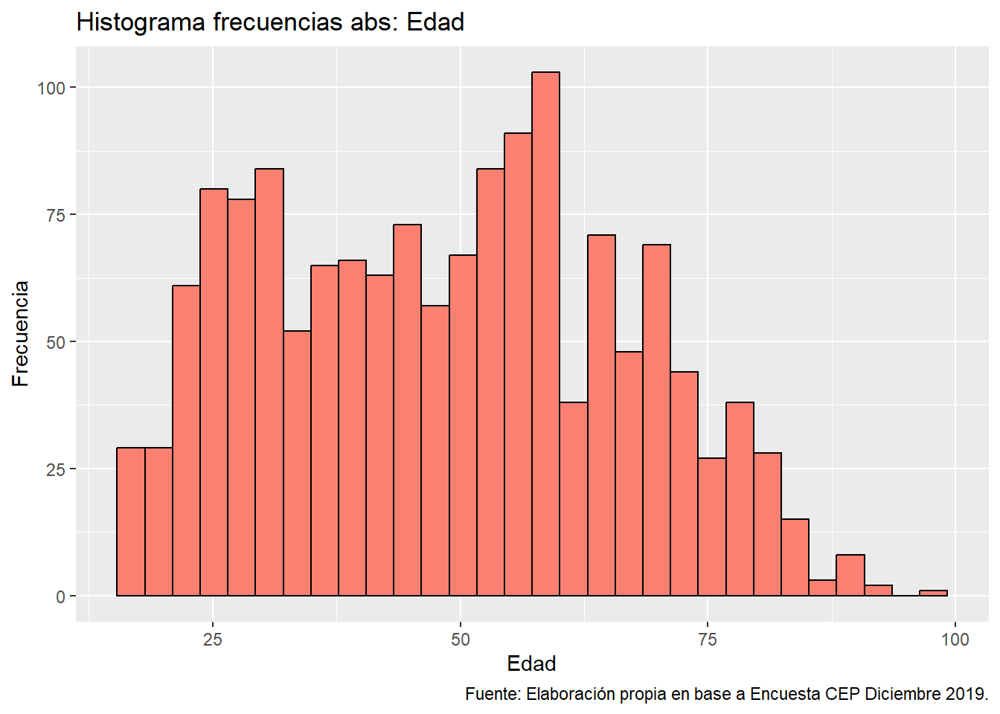
ggplot(data = proc_cep,
mapping = aes(x = satisfaccion)) + # especificamos datos y mapping
geom_histogram(color = "black", fill = "darkred") + # agregamos geometria y colores
labs(title ="Histograma frecuencias abs: Satisfaccion",
x = "Satisfaccion",
y = "Frecuencia",
caption = "Fuente: Elaboración propia en base a Encuesta CEP Diciembre 2019.") # agregamos titulo, nombres a los ejes y fuente`stat_bin()` using `bins = 30`. Pick better value with `binwidth`.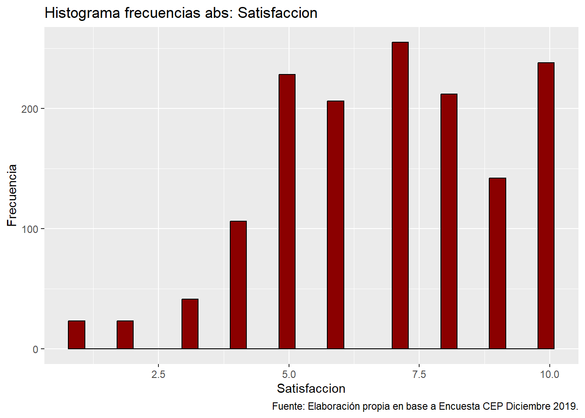
6.3 Digrama de densidad
Los diagramas de densidad son una forma más suavizada de observar la distribución de una variable, siendo comunmente utilizados para contrastar distribuciones empíricas con las teóricas.
ggplot(data = proc_cep,
mapping = aes(x = edad)) + # especificamos datos y mapping
geom_density(color = "black", fill = "#FA8072", alpha = 0.8) + # agregamos geometria y colores
labs(title ="Diagrama densidad: Edad",
x = "Edad",
y = "Frecuencia",
caption = "Fuente: Elaboración propia en base a Encuesta CEP Diciembre 2019.") # agregamos titulo, nombres a los ejes y fuente
ggplot(data = proc_cep,
mapping = aes(x = satisfaccion)) + # especificamos datos y mapping
geom_density(color = "black", fill = "darkred", alpha = 0.8) + # agregamos geometria y colores
labs(title ="Histograma densidad: Satisfaccion",
x = "Satisfaccion",
y = "Frecuencia",
caption = "Fuente: Elaboración propia en base a Encuesta CEP Diciembre 2019.") # agregamos titulo, nombres a los ejes y fuente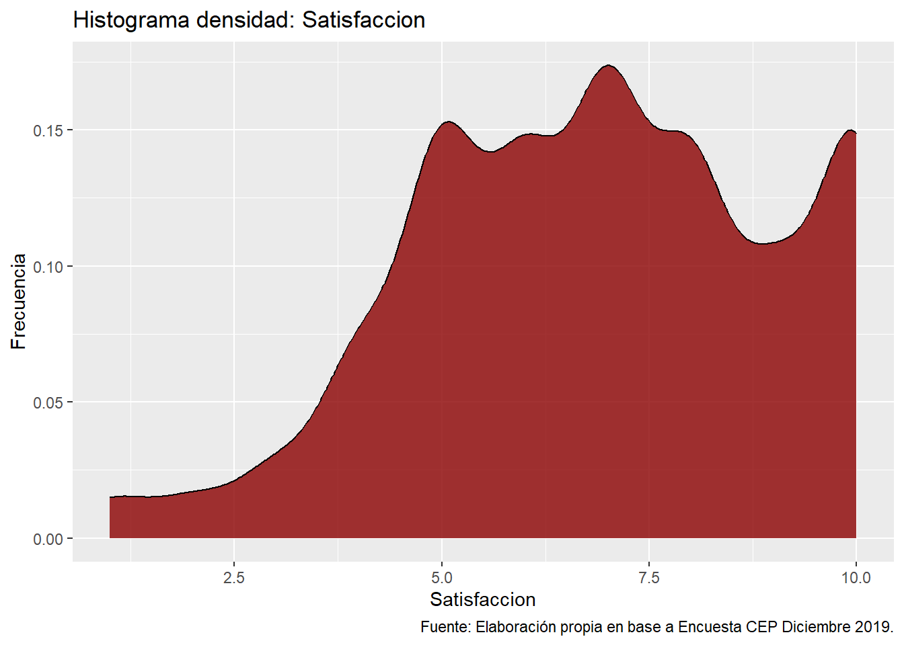
6.4 Gráficos de caja y bigote
Como vimos en clases, los graficos de cajas y bigotes nos sirven para observar la mediana de los datos, el Q1 y Q3, el IQR, los valores minimos y maximos, y los valores atípicos.
ggplot(data = proc_cep,
mapping = aes(y = edad)) + # especificamos datos y mapping
geom_boxplot(fill = "darkblue", alpha = 0.8) + # agregamos geometria y colores
labs(title ="Gráfico de cajas: Edad",
y = "Edad",
caption = "Fuente: Elaboración propia en base a Encuesta CEP Diciembre 2019.") # agregamos titulo, nombres a los ejes y fuente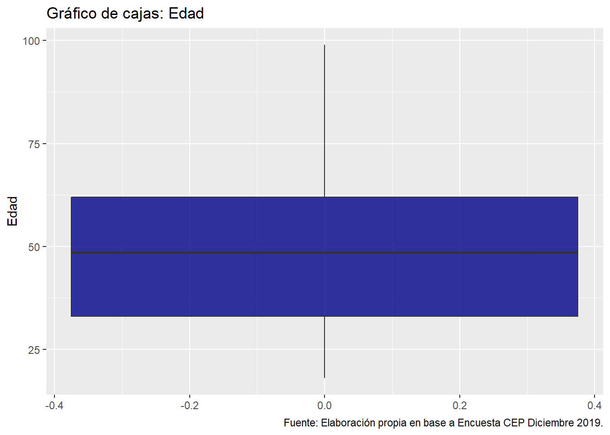
ggplot(data = proc_cep,
mapping = aes(y = satisfaccion)) + # especificamos datos y mapping
geom_boxplot(fill = "darkred", alpha = 0.8) + # agregamos geometria y colores
labs(title ="Gráfico de cajas: Satisfaccion",
y = "Satisfaccion",
caption = "Fuente: Elaboración propia en base a Encuesta CEP Diciembre 2019.") # agregamos titulo, nombres a los ejes y fuente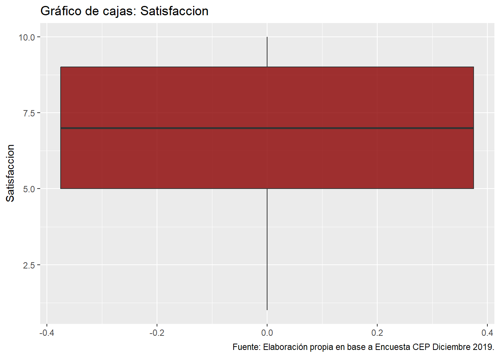
Ahora, segmentemos en un grafico de cajas la variable satisfaccion por tramo etario.
ggplot(data = proc_cep,
mapping = aes(y = satisfaccion, fill = tramo_edad)) + # especificamos datos y mapping
geom_boxplot(alpha = 0.8) + # agregamos geometria y colores
labs(title ="Gráfico de cajas: Satisfaccion por tramo etario",
y = "Satisfaccion",
caption = "Fuente: Elaboración propia en base a Encuesta CEP Diciembre 2019.") # agregamos titulo, nombres a los ejes y fuente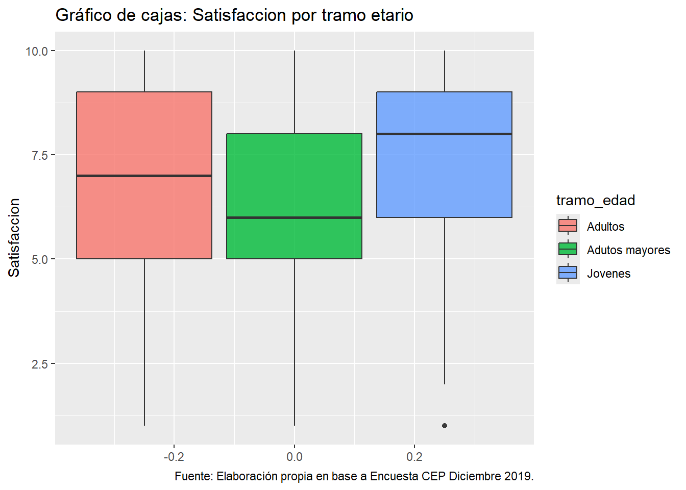
Resumen
Hoy aprendimos a visualizar datos en R. En detalle, vimos:
1. La noción de una distribución y sus tipos (continuas y discretas)
2. Estimar e interpretar la asimetría y curtosis de una distribución
3. Contrastar distribuciones empíricas con **teóricas*
4. La noción de distribución muestral
5. Qué es la visualización de datos y cómo comunicarlos a una audiencia de manera eficiente, completa e insesgada.
6. Visualizar datos univariados con {ggplot2}.